Linux漫游——用户与组，进程凭证
用户与组，进程凭证
8.1 密码文件：/etc/passwd
针对系统的每个用户账号，系统密码文件/etc/passwd 会专列一行进行描述。每行都包含 7个字段，之间用冒号分隔，如下所示：
接下来，将按顺序介绍这 7 个字段。
- 登录名：登录系统时，用户所必须输入的唯一名称。通常，也将其称为用户名。此外，也可将登录名视为人类可读的（符号）标识符，与数字用户标识符（稍后介绍）相对应。当使用诸如 ls(1)这样的程序去显示文件的所有权时（比如，执行 ls –l 时），会显示出登录名，而非与文件关联的数值型用户 ID。
- 经过加密的密码：该字段包含的是经过加密处理的密码，长度为 13 个字符，8.5 节会对此做深入讨论。如果密码字段中包含了任何其他字符串，特别是，当字符串长度超过 13 个字符时，将禁止此账户登录，原因是此类字符串不能代表一个经过加密的有效密码。不过，请注意，要是启用了 shadow 密码（这是常规做法），系统将会不解析该字段。这时，/etc/passwd 中的密码字段通常会包含字母“x”（当然，也可以是任何非空字串），而经过加密处理的密码实际上却存储到 shadow 密码文件中（参见 8.2 节）。若/etc/passwd 中密码字段为空，则该账户登录时无需密码（即便启用了 shadow 密码，也是如此）。
本章假定对密码的加密算法为 DES（数据加密标准），这也是一直为 UNIX 所广泛使用的密码加密算法。还可用其他加密算法（比如，MD5）来替代 DES，针对输入生成 128 位的消息摘要（hash 的一种）。在密码（或 shadow 密码）文件中，该消息摘要会以长度为 34 字符的字符串形式存储。- 用户 ID（UID）：用户的数值型 ID。如果该字段的值为 0，那么相应账户即具有特权级权限。这种账号一般只有一个，其登录名为 root。在 Linux 2.2 或更早的版本中，用户 ID 为 16 位值，其范围为 0～65535。而 Linux 2.4 及其以后的版本则以 32 位值来存储用户 ID，因此能够支持更多的用户数。
在密码文件中，允许（但不常见）同一用户 ID 拥有多条记录，从而使得同一用户 ID拥有多个登录名。如此一来，多个用户便能以不同密码（登录）去访问相同资源（比如，文件等）。此外，不同的登录名还可以关联一系列不同的组 ID。- 组 ID（GID）：用户属组中首选属组的数值型 ID。关于用户与属组之间从属关系的进一步信息，会在系统组文件中加以定义。
- 注释：该字段存放关于用户的描述性文字。诸如 finger(1)之类的各种程序会显示此信息。
- 主目录：用户登录后所处的初始路径。会以该字段内容来设置 HOME 环境变量。
- 登录 shell：一旦用户登录，便交由该程序控制。通常，该程序为 shell 的一种（比如，bash），但也可以是其他任何程序。如果该字段为空，那么登录 shell 默认为/bin/sh（Bourne shell）。会以该字段值来设置 SHELL 环境变量。
在单机系统中，所有密码信息都存储在/etc/passwd 文件中1。然而，如果使用了 NIS（网络信息系统）或 LDAP（轻型目录访问协议）在网络环境中分发密码，那么部分密码信息可能会由远端系统保存。只要访问密码信息的程序采用的是本章稍后描述的函数（getpwnam()、getpwuid()等），那么无论是使用 NIS 还是 LDAP，对应用程序来说都是透明的。类似论断同样适用于本章随后几节所讨论的 shadow 密码文件和组文件。
8.2 shadow 密码文件：/etc/shadow
很久以来，UNIX 一直在/etc/passwd 中维护所有的用户信息，这其中包括经过加密处理的密码。但这一举措也带来了安全问题。由于许多非特权级别系统工具需要读取密码文件中的其他信息，密码文件因而不得不对所有用户开放可读权限。这就为密码破解工具提供了可乘之机，它们会尝试对可能成为密码的大量词汇（比如，字典中的标准单词或人名）进行加密，然后再将结果与经过加密处理的用户密码进行比对。作为防范此类攻击的手段之一，shadow密码文件/etc/shadow 应运而生。其理念是用户的所有非敏感信息存放于“人人可读”的密码文件中，而经过加密处理的密码则由 shadow 密码文件单独维护，仅供具有特权的程序读取。shadow 密码文件包含有登录名（用来匹配密码文件中的相应记录）、经过加密的密码，以及其他若干与安全性相关的字段。shadow(5)手册页对这些字段作了详细描述。本章将着重关注经过加密的密码字段，将在 8.5 节介绍 crypt()库函数时做深入讨论。SUSv3 并未对 shadow 密码作出规范，也并非所有的 UNIX 实现都提供这一特性，即使是都支持这一特性的各种实现，在关于 API 和文件位置上的细节也不尽相同。
8.3 组文件：/etc/group
出于各种管理方面的考虑，尤其是要控制对文件和其他系统资源的访问，对用户进行编组极具实用价值。对用户所属各组信息的定义由两部分组成：一，密码文件中相应用户记录的组 ID 字段；二，组文件列出的用户所属各组。这种将信息分置于两个文件中的奇怪现状，自有其历史渊源。在早期 UNIX 实现中，一个用户同时只能从属于一个组。登录时，用户最初的属组关系由密码文件的组 ID 字段决定，在此之后，可使用 newgrp(1)命令去改变用户属组，但需要用户提供组密码（若该组处于密码的保护之下）。4.2BSD 引入了并发多属组（multiple simultaneous group memberships）的概念，POSIX.1-1990 随后对其进行了标准化。采用这种方案，组文件会列出每个用户所属的其他属组。（groups(1)命令会显示当前 shell 进程所属各组的信息，如果将一个或多个用户名作为其命令行参数，那么该命令将显示相应用户所属各组的信息。）系统中的每个组在组文件/etc/group 中都对应着一条记录。每条记录包含 4 个字段，之间以冒号分隔，如下所示：
本节将依次介绍这 4 个字段。
- 组名：组的名称。与密码文件中的登录名相似，可以将其视为与数值型组标识符相对应的人类可读（符号）标识符。
- 经过加密处理的密码：组密码属于非强制特性，对应于该字段。随着多属组的出现，当今的 UNIX 系统已经很少使用组密码。不过，依然可以为组设置密码（特权用户可使用 gpasswd 命令来设置组密码）。如果用户并非某组的成员，那么在使用 newgrp(1)启动新 shell 之前（新 shell 的属组包括该组），就需要用户提供此密码。如果启用了shadow 密码，那么系统将不解析该字段（这时，该字段通常只包含字母 x，但也允许其内容为包括空字符串在内的任何字符串），而经过加密的密码实际上则存放于shadow 组文件/etc/gshadow 中，仅供具有特权的用户和程序访问。组密码的加密方式类似于用户密码（8.5 节）。
- 组 ID（GID）：该组的数值型 ID。正常情况下，对应于组 ID 号 0，只定义一个名为 root的组（与/etc/passwd 中用户 ID 为 0 的记录相近）。在 Linux 2.2 或更早的版本中，组ID 为 16 位值，其范围为 0～65535；而自 Linux 2.4 以后的版本则以 32 位值来存储组 ID。
- 用户列表：属于该组的用户名列表，之间以逗号分隔。（这份列表包含的是用户名，而非用户 ID，原因在于如前所述，在密码文件的各条记录中，用户 ID 并不一定唯一。）为了证明用户 avr 是 users、staff 以及 teach 各组的成员，应能从密码文件中查看到如下记录：
且在组文件中应有如下记录：
在密码文件记录的第 4 个字段中，组 ID 为 100，这说明 avr 是 users 组的成员之一。其他属组关系，则见诸于组文件内包含 avr 的各条相关记录。
8.4 获取用户和组的信息
本节所要介绍的库函数，其功能包括从密码文件、shadow 密码文件和组文件中获取单条记录，以及扫描上述各个文件的所有记录。
从密码文件获取记录
函数 getpwnam()和 getpwuid()的作用是从密码文件中获取记录。
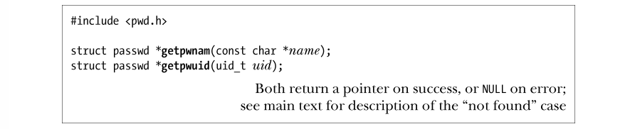
为 name 提供一个登录名，getpwnam()函数就会返回一个指针，指向如下类型的结构，其中包含了与密码记录相对应的信息：
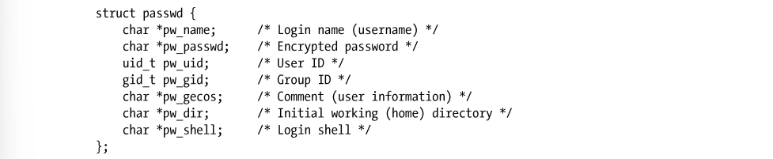
passwd 结构的 pw_gecos 和 pw_passwd 字段虽未在 SUSv3 中定义，但获得了所有 UNIX实现的支持。仅当未启用 shadow 密码的情况下，pw_passwd 字段才会包含有效信息。要确定是否启用了 shadow 密码，最简单的编程方法是在成功调用 getpwnam()之后，紧接着调用getspnam()（稍后介绍），并观察后者是否能为同一用户名返回一条 shadow 密码记录。某些其他实现还会在该结构中定义额外的非标准字段。pw_gecos 字段，其命名源于早期的 UNIX 实现，该字段所含信息原用于与运行 GECOS（通用电器综合操作系统）的计算机进行通信。虽然这一用途早已过时，但其名称却得以沿用至今，只是将字段用途转而用于记录用户的相关信息。函数 getpwuid()的返回结果与 getpwnam()完全一致，但会使用提供给 uid 参数的数值型用户 ID 作为查询条件。getpwnam()和 getpwuid()均会返回一个指针，指向一个静态分配的结构。对此二者下文描述的 getpwent()函数）的任何一次调用都会改写该数据结构。
由于 getpwnam()和 getpwuid()返回的指针指向由静态分配而成的内存，故而二者都是不可重入的（not reentrant）。实际上，情况甚至要更加复杂，因为返回的 passwd 结构还包含了指向其他信息（比如，pw_name）的指针，而这些信息同样也是由静态分配而成的。21.1.2节会解释可重入（reentrancy）概念。类似的论断同样适用于 getgrnam()和 getgrgid()函数（稍后介绍）。
SUSv3 为该组函数定义了与之等价的一组可重入函数：getpwnam_r()、getpwuid_r()、getgrnam_r()以及 getgrgid_r()。其参数包括 passwd（或 group）结构，以及一个缓冲区。这一缓冲区专门用来保存 passwd(group)结构中各字段所指向的其他结构。可使用系统函数sysconf(_SC_GETPW_R_SIZE_MAX)（若为与组相关的函数，则使用 sysconf(_SC_GETGR_ R_SIZE_MAX)），来获得此缓冲区所需的字节数。以上函数的详细信息请查阅手册页。 SUSv3 规定，如果在 passwd 文件中未发现匹配记录，那么 getpwnam()和 getpwuid()将返回 NULL，且不会改变 errno。这意味着，可以使用如下代码，对出错和“未发现匹配记录”这两种情况加以区分：
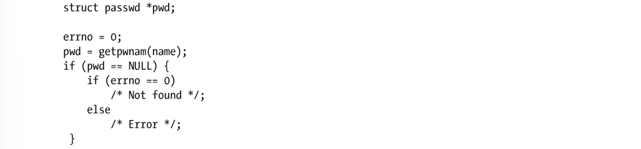
然而，不少 UNIX 实现在这一点上并未遵守 SUSv3 规范。如果未能在 passwd 文件中发现一条匹配记录，那么两个函数均会返回 NULL，并将 errno 设置为非零值，比如，ENOENT 或ESRCH。针对这种情况，2.7 版本之前的 glibc 会产生 ENOENT 错误，而从 2.7 版本开始，glibc开始遵守 SUSv3 规范。实现之间之所以存在上述差异，部分原因是由于 POSIX.1-1990 不但不要求两个函数在出错时设置 errno，而且还允许它们针对“未发现匹配记录”的情况去设置errno。总而言之，在使用这两个函数时，若要区分上述这两种情况（出错和“未发现匹配记录”），实际上将无法保证代码的可移植性。
从组文件获取记录
函数 getgrnam()和 getgrgid()的作用是从组文件中获取记录。函数 getgrnam()和 getgrgid()分别通过组名和组 ID 来查找属组信息。两个函数都会返回一个指针，指向如下类型结构：
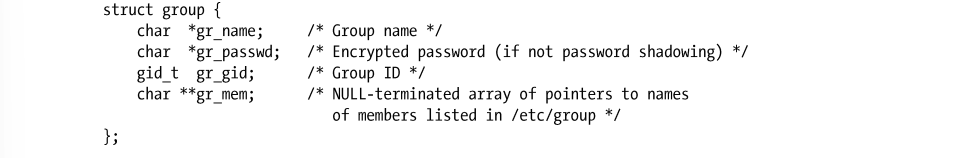
SUSv3 并未就 group 结构中的 gr_passwd 字段做明确定义，但大多数 UNIX 实现都支持该字段。与前述密码相关函数一样，对这两个函数的任何一次调用都会改写该结构的内容。如果未能在 group 文件中发现匹配记录，那么这两个函数的行为变化与前述 getpwnam()和 getpwuid()函数相同2。程序示例对本节所述的函数来说，最常见的用法之一是在符号型用户名和组名与数值型 ID 之间进行相互转换。程序清单 8-1 以 userNameFromId()、userIdFromName()、groupNameFromId()以及 groupIdFromName()这 4 个函数的形式，演示了上述转换。为方便调用，userIdFromName()和 groupIdFromName()还允许 name 参数接受（纯）数值的字符串形式3。对于这种情况，会直接将字符串转换为数字返回给调用者。在本书后面的一些程序实例中，还会用到这几个函数。
程序清单 8-1：在用户名/组名和用户 ID/组 ID 之间互相转换的函数
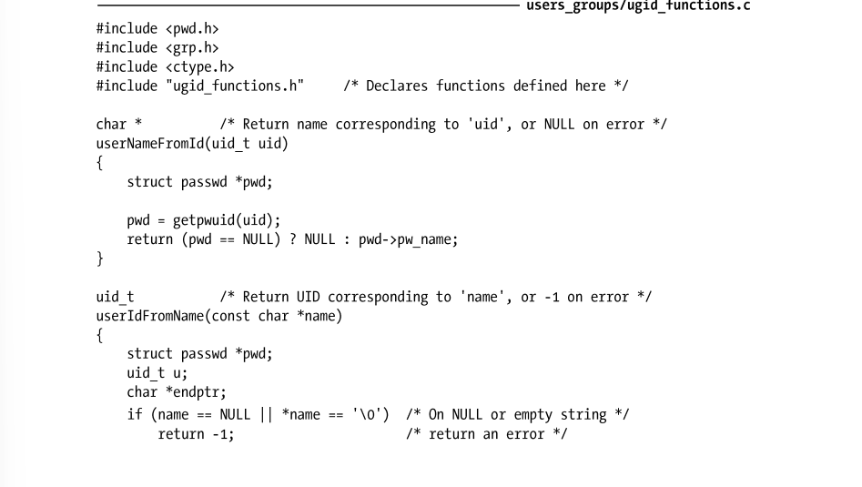
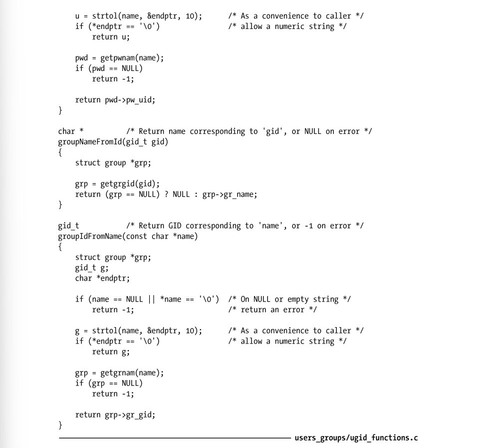
扫描密码文件和组文件中的所有记录
函数 setpwent()、getpwent()和 endpwent()的作用是按顺序扫描密码文件中的记录。函数 getpwent()能够从密码文件中逐条返回记录，当不再有记录1（或出错）时，该函数返回 NULL。getpwent()一经调用，会自动打开密码文件。当密码文件处理完毕后，可调用endpwent()将其关闭。可使用以下代码遍历整个密码文件，并打印出登录名和用户 ID。
如果需要让后续的 getpwent()调用（也许是在程序的其他代码中，也许是在所调用的其他库函数中，该函数再次出现）再次打开密码文件并重启扫描过程，此处的 endpwent()调用就必不可少。此外，如果对该文件处理到中途时，还可以调用 setpwent()函数重返文件起始处。函数 getgrent()、setgrent()和 endgrent()针对组文件执行类似的任务。由于这 3 个函数与前述的密码文件函数功能相似，故而其函数原型也就不再列出，详细信息请参考手册页。
从 shadow 密码文件中获取记录
下列函数的作用包括从 shadow 密码文件中获取个别记录，以及扫描该文件中的所有记录。
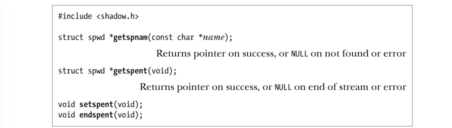
由于上述函数在操作上类似于相应的密码文件函数，故而此处对它们的介绍也就点到为止。（上述函数既未在 SUSv3 中明确定义，也未获得所有 UNIX 实现的支持。）函数 getspnam()和 getspent()会返回指向 spwd 类型结构的指针。该结构的形式如下：
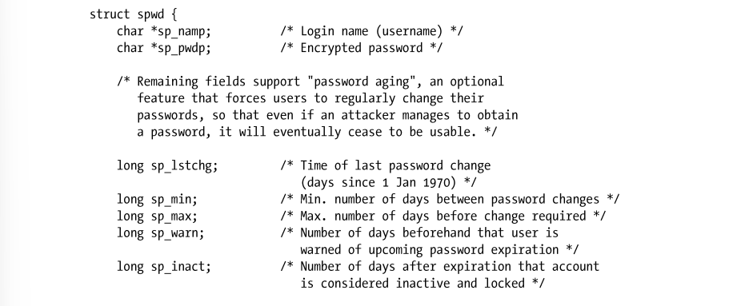
在程序清单 8-2 中，将会演示对 getspnam()的使用。
8.5 密码加密和用户认证
某些应用程序会要求用户对自身进行认证，通常会采取用户名（登录名）/密码的认证方式。出于这一目的，应用程序可能会维护其自有的用户名和密码数据库。然而，或许是由于势所必然，或许是为了方便起见，有时需要让用户输入标准的用户名/密码（定义于/etc/passwd和/etc/shadow 之中）。（本节的剩余部分将假定系统启用了 shadow 密码，经过加密处理的密码也因此存储于/etc/shadow 中。）需要登录到远程系统的网络应用程序，诸如 ssh 和 ftp，就是此类程序的典范，必须按标准的 login 程序那样，对用户名和密码加以验证。由于安全方面的原因，UNIX 系统采用单向加密算法对密码进行加密，这意味着由密码的加密形式将无法还原出原始密码。因此，验证候选密码的唯一方法是使用同一算法对其进行加密，并将加密结果与存储于/etc/shadow 中的密码进行匹配。加密算法封装于 crypt()函数之中。
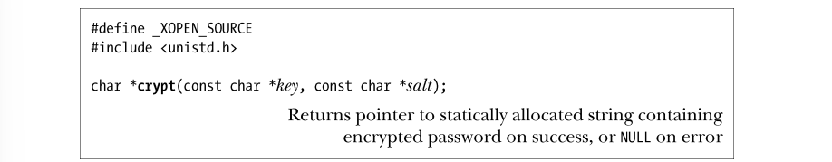
crypt()算法会接受一个最长可达 8 字符的密钥（即密码），并施之以数据加密算法（DES）的一种变体。salt 参数指向一个两字符的字符串，用来扰动（改变）DES 算法，设计该技术，意在使得经过加密的密码更加难以破解。该函数会返回一个指针，指向长度为 13 个字符的字符串，该字符串为静态分配而成，内容即为经过加密处理的密码。DES 的详细信息请参考 http://www.itl.nist.gov/fipspubs/fip46-2.htm。如前所述，除 DES以外，也可以使用其他的加密算法。例如，使用 MD5 算法可以生成一个 34 字符的字符串，其首字符为美元符号（$），这便于让 crypt()将 DES 加密密码和 MD5 加密密码区分开来。在关于密码加密的讨论中，本书对“加密”一词的使用相对宽松。确切说来，DES 会以给定的密码字符串作为加密密钥，编码得出固定位长的字符串，而 MD5 则是一种复杂的哈希函数。以上两种方法其实殊途同归，对输入密码的加密变换既不可逆又难以破解。salt 参数和经过加密的密码，其组成成员均取自同一字符集合，范围在[a-zA-Z0-9/.]之间，共计 64 个字符。因此，两个字符的 salt 参数可使加密算法产生 4096（64×64）种不同变化。这意味着，预先对整部字典进行加密，再以其中的每个单词与经过加密处理的密码进行比对的做法并不可行，破解程序需要对照字典的 4096 种加密版本来检查密码。由 crypt()所返回的经过加密的密码中，头两个字符是对原始 salt 值的拷贝。也就是说，加密候选密码时，能够从已加密密码（存储于/etc/shadow 内）中获取 salt 值。（加密新密码时，passwd(1)这样的程序会生成一个随机 salt 值。）事实上，在 salt 字符串中，只有前两个字符对crypt()函数有意义。因此，可以直接将已加密密码指定为 salt 参数。要想在 Linux 中使用 crypt()，在编译程序时需开启–lcrypt 选项，以便程序链接 crypt 库。
程序示例
程序清单 8-2 演示了如何使用 crypt()来验证用户。该程序首先读取用户名，然后会获取相应的密码记录以及（如开启了 shadow 密码功能）shadow 密码记录。若未能发现密码记录，或程序没有权限读取 shadow 密码文件（需要超级用户权限，或具有 shadow 组成员资格），该程序会打印一条错误消息并退出。接下来，该程序会使用 getpass()函数，读取用户密码。getpass()函数首先会屏蔽回显功能，并停止对终端特殊字符的处理（诸如中断字符，一般为 Control-C）。（第 62 章将论述如何更改这些终端设置。）然后，该函数会打印出 prompt 所指向的字符串，读取一行输入，返回以 NULL 结尾的输入字符串（剥离尾部的换行符）作为函数结果。（该字符串由静态分配而成，故而后续对 getpass()的调用会覆盖其原有内容。）返回结果之前，getpass()会将终端设置还原。使用 getpass()读取密码之后，程序清单 8-2 所示程序会对密码进行验证—使用 crypt()加密密码，并将结果与 shadow 密码文件中经过加密的密码记录进行比对。若两者匹配，则显示用户 ID，如下所示：
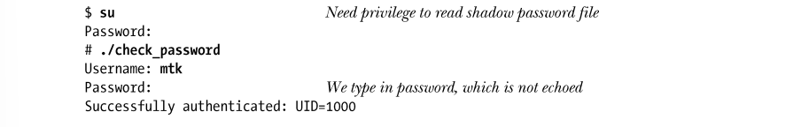
程序清单 8-2 中，以调用 sysconf(_SC_LOGIN_NAME_MAX)的返回值作为存放用户名字符串数组的大小，该调用获取了主机系统上用户名字符串的最大长度。11.2 节将介绍sysconf()的使用。
程序清单 8-2：根据 shadow 密码文件验证用户
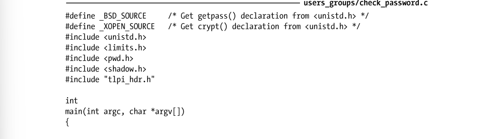
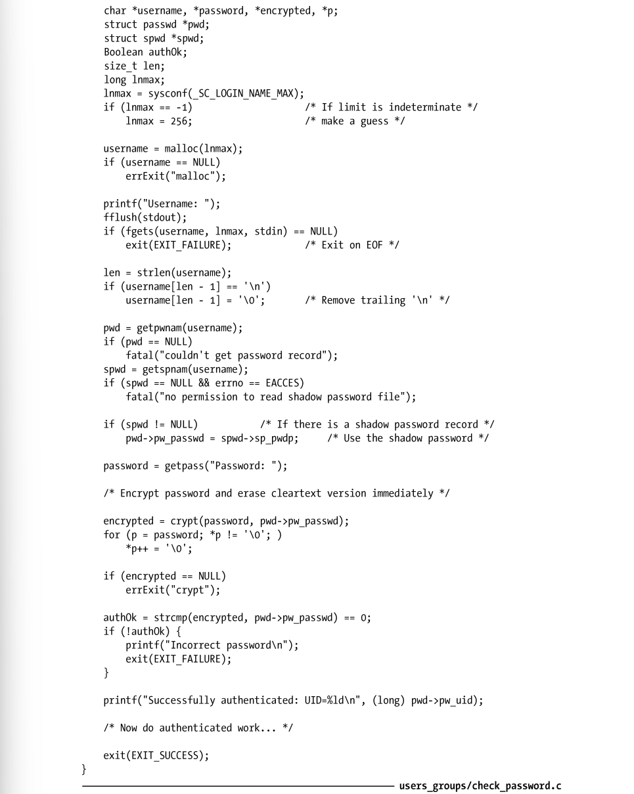
程序清单 8-2 展示了一个安全要点。读取密码的程序应立即加密密码，并尽快将密码的明文从内存中抹去。只有这样，才能基本杜绝如下事件的发生：恶意之徒借程序崩溃之机，读取内核转储文件以获取密码。仍有可能采用其他方法曝光未经加密的密码。例如，如果包含密码的虚拟内存页执行了换出操作，那么特权级程序就能交换文件中读取密码。此外，拥有足够权限的进程可通过读取/dev/mem（虚拟设备之一，将计算机物理内存表示为有序字节流），来尝试发现密码。SUSv2 将 getpass()函数标记为 LEGACY，并特别指出该函数名容易产生误导，且其所提供的功能无论在何种情况下都极易于实现。SUSv3 摒弃了 getpass()，但在大多数 UNIX实现中依然保留了对它的支持。
8.6 总结
每个用户都有一个唯一的用户名和一个与之对应的数值型用户 ID。用户可以隶属于一个或多个组，每个组都有一个唯一的名称和一个与之对应的数字标识符。这些标识符的主要用途在于确立各种系统资源（比如，文件）的所有权和访问这些资源的权限。用户名和 ID 在/etc/passwd 文件中加以定义，该文件也包含有关用户的其他信息。用户的属组则由/etc/passwd 和/etc/group 文件中的相关字段来定义。还有一个只能由特权级进程所读取的文件/etc/shadow，其作用在于将敏感的密码信息与/etc/passwd 中共用的用户信息分离开来。系统还提供有不同的库函数，用于从上述各个文件中获取信息。crypt()函数加密密码的方式与标准的 login 程序相同，这对需要认证用户的程序来说极为有用。
进 程 凭 证
9.1 实际用户 ID 和实际组 ID
实际用户 ID 和实际组 ID 确定了进程所属的用户和组。作为登录过程的步骤之一，登录shell 从/etc/passwd 文件中读取相应用户密码记录的第三字段和第四字段，置为其实际用户 ID和实际组 ID（8.1 节）。当创建新进程（比如，shell 执行一程序）时，将从其父进程中继承这些 ID。
9.2 有效用户 ID 和有效组 ID
在大多数 UNIX 实现（Linux 实现略有差异，具体参见 9.5 节的说明）中，当进程尝试执行各种操作（即系统调用）时，将结合有效用户 ID、有效组 ID，连同辅助组 ID 一起来确定 1 译者注：即标识符。授予进程的权限。例如，当进程访问诸如文件、System V 进程间通信（IPC）对象之类的系统资源时，此类 ID 会决定系统授予进程的权限，而这些资源的属主则另由与之相关的用户 ID和组 ID 来决定。如 20.5 节所述，内核还会使用有效用户 ID 来决定一个进程是否能向另一个进程发送信号。有效用户 ID 为 0（root 的用户 ID）的进程拥有超级用户的所有权限。这样的进程又称为特权级进程（privileged process）。而某些系统调用只能由特权级进程执行。第 39 章描述了 Linux 实现的能力（capability）方案，即把授予给超级用户的特权划分为若干不同单元，且能独立启用和禁用这些单元。通常，有效用户 ID 及组 ID 与其相应的实际 ID 相等，但有两种方法能够致使二者不同。其一是使用 9.7 节中所讨论的系统调用，其二是执行 set-user-ID 和 set-group-ID 程序。
9.3 Set-User-ID 和 Set-Group-ID 程序
set-user-ID 程序会将进程的有效用户 ID 置为可执行文件的用户 ID（属主），从而获得常规情况下并不具有的权限。set-group-ID 程序对进程有效组 ID 实现类似任务。（术语 set-user-ID程序和 set-group-ID 程序有时也简称为 set-UID 程序和 set-GID 程序。）与其他文件一样，可执行文件的用户 ID 和组 ID 决定了该文件的所有权。另外，可执行文件还拥有两个特别的权限位 set-user-ID 位和 set-group-ID 位。（实际上，任何文件都是如此，但此处只关注可执行文件的这两个权限位。）可使用 chmod 命令来设置这些权限位。非特权用户能够对其拥有的文件进行设置，而特权级用户（CAP_FOWNER）能够对任何文件进行设置。例如：
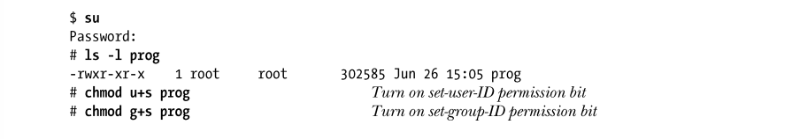
正如本例所示，也有可能对这两个权限位都进行设置，虽然这一做法并不常见。当使用ls –l 命令查看文件权限时，如果为程序设置了 set-user-ID 权限位和 set-group-ID 权限位，那么通常用来表示文件可执行权限的 x 标识会被 s 标识所替换。
当运行 set-user-ID 程序（即通过调用 exec()将 set-user-ID 程序载入进程的内存中）时，内核会将进程的有效用户 ID 设置为可执行文件的用户 ID。set-group-ID 程序对进程有效组 ID 的操作与之类似。通过这种方法修改进程的有效用户 ID 或者组 ID，能够使进程（换言之，执行该程序的用户）获得常规情况下所不具有的权限。例如，如果一个可执行文件的属主为 root（超级用户），且为此程序设置了 set-user-ID 权限位，那么当运行该程序时，进程会取得超级用户权限。也可以利用程序的 set-user-ID 和 set-group-ID 机制，将进程的有效 ID 修改为 root 之外的其他用户。例如，为提供对一个受保护文件（或其他系统资源）的访问， 采用如下方案就绰绰有余：创建一个具有对该文件访问权限的专用用户（组）ID，然后再创建一个 set-user-ID（set-group-ID）程序，将进程有效用户（组）ID 变更为这个专用 ID。这样，无需拥有超级用户的所有权限，程序就能访问该文件。有时会使用术语 set-user-ID-root 来表示 root 用户所拥有的 set-user-ID 程序，以示与由其他用户所拥有的 set-user-ID 程序有所区别，后者仅为进程提供其属主所具有的权限。
术语 privileged（特权级）有两种不同含义，其一是为早期定义而成的，有效用户 ID为 0 的进程，拥有 root 用户的所有特权。然而，当 set-user-ID 程序的属主并非 root 用户时，进程也会获得 set-user-ID 程序属主的特权。各种情况下术语 privileged 的具体含义，可通过上下文来加以辨别。出于 38.3 节所给出的理由，在 Linux 系统中，set-user-ID 和 set-group-ID 权限位对 shell脚本无效。
Linux 系统中经常使用的 set-user-ID 程序包括：passwd(1)，用于更改用户密码；mount(8) 和 umount(8)，用于加载和卸载文件系统；su(1)，允许用户以另一用户的身份运行 shell。set-group-ID 程序的例子之一为 wall(1)，用来向 tty 组下辖的所有终端（通常情况下，所有终端都属于该组）写入一条消息。
8.5 节曾特别指出，程序清单 8-2 中的程序需要以 root 用户身份运行，以便获取对/etc/shadow 文件的访问权限。欲使该程序可为任一用户执行，必须将其设置为 set-user-ID-root程序，如下所示：set-user-ID/set-group-ID 技术集实用性与强大的功能于一身，但一旦设计欠佳也可能造成安全隐患。第 38 章总结了一整套良好的编程习惯，编写 set-user-ID 和 set-group-ID 程序时应多加参考。
9.4 保存 set-user-ID 和保存 set-group-ID
设计保存 set-user-ID（saved set-user-ID）和保存 set-group-ID (saved set-group-ID)，意在与set-user-ID 和 set-group-ID 程序结合使用。当执行程序时，将会（依次）发生如下事件（在诸多事件之中）。
1． 若可执行文件的 set-user-ID (set-group-ID)权限位已开启，则将进程的有效用户（组）ID置为可执行文件的属主。若未设置 set-user-ID (set-group-ID)权限位，则进程的有效用户（组）ID 将保持不变。
2． 保存 set-user-ID 和保存 set-group-ID 的值由对应的有效 ID 复制而来。无论正在执行的文件是否设置了 set-user-ID 或 set-group-ID 权限位，这一复制都将进行。举例说明上述操作的效果，假设某进程的实际用户 ID、有效用户 ID 和保存 set-user-ID 均为 1000，当其执行了 root 用户（用户 ID 为 0）拥有的 set-user-ID 程序后，进程的用户 ID 将发生如下变化：
有不少系统调用，允许将 set-user-ID 程序的1有效用户 ID 在实际用户 ID 和保存 set-user-ID之间切换。针对 set-group-ID 程序对其进程有效组 ID 的修改，也有与之相类似的系统调用来支持。如此一来，对于与执行文件用户（组）ID 相关的任何权限，程序能够随时 “收放自如”。（换言之，程序可以游走于两种状态之间：具备获取特权的潜力和以特权进行实际操作。）正如 38.2 节所述，只要 set-user-ID 程序和 set-group-ID 程序没有执行与特权级 ID（亦即实际 ID）相关的任何操作，就应将其置于非特权（即实际）ID 的身份之下，这是一种安全的编程手法。有时也将保存 set-user-ID 和保存 set-group-ID 称之为保存用户 ID（saved user ID）和保存组 ID（saved group ID）。保存设置 ID 由 System V 首创，后为 POSIX 所采用。4.4 之前的 BSD 版本不提供对此特性的支持。最初的 POSIX.1 标准将对这些 ID 的支持列为可选，但之后的版本（始于 1988年诞生的 FIPS 151-1 标准）则强制要求提供这一特性。
9.5 文件系统用户 ID 和组 ID
在 Linux 系统中，要进行诸如打开文件、改变文件属主、修改文件权限之类的文件系统操作时，决定其操作权限的是文件系统用户 ID 和组 ID（结合辅助组 ID），而非有效用户 ID 和组ID。（和其他 UNIX 实现一样，有效用户 ID 和组 ID 仍在使用，其用途在前面章节已有论述。）通常，文件系统用户 ID 和组 ID 的值等同于相应的有效用户 ID 和组 ID（因而一般也等同于相应的实际用户 ID 和组 ID）。此外，只要有效用户或组 ID 发生了变化，无论是通过系统调用，还是通过执行 set-user-ID 或者 set-group-ID 程序，则相应的文件系统 ID 也将随之改变为同一值。由于文件系统 ID 对有效 ID 如此的“亦步亦趋”，这意味着在特权和权限检查方面，Linux 实际上跟其他 UNIX 实现非常类似。只有当使用 Linux 特有的两个系统调用（setfsuid() 和 setfsgid()）时，才可以刻意制造出文件系统 ID 与相应有效 ID 的不同，因而 Linux 也不同于其他的 UNIX 实现。那么，Linux 为什么要提供文件系统 ID 呢？在何种情况下，需要使有效 ID 有别于文件系统 ID 呢？这主要是由于历史原因造成的。文件系统 ID 始见于 Linux 1.2 版本。在该版本的内核中，如果进程某甲的有效用户 ID 等同于进程某乙的实际用户 ID 或者有效用户 ID，那么发送者（某甲）就可以向目标进程（某乙）发送信号。这在当时影响到了不少程序，比如 Linux NFS（网络文件系统）服务器程序，在访问文件时就好像拥有着相应客户进程的有效 ID。然而，如果 NFS 服务器真地修改了自身的有效用户 ID，面对非特权用户进程的信号攻击，又将不堪一击。为了防范这一风险，文件系统用户 ID 和组 ID 应运而生。NFS 服务器将有效 ID 保持不变，而是通过修改文件系统 ID 伪装成另一用户，这样既达到了访问文件的目的，又避免了遭受信号攻击。自内核 2.0 起，Linux 开始在信号发送权限方面遵循 SUSv3 所强制规定的规则，且这些规则不再涉及目标进程的有效用户 ID（参考 20.5 节）。因此，从严格意义上来讲，保留文件系统 ID 特性已无必要（如今，进程可以根据需要，审慎而明智地利用本章稍后介绍的系统调用，使以非特权值对有效用户 ID 的赋值来去自由，以实现预期结果），但为了与现有软件保持兼容，这一功能得以保留了下来。由于文件系统 ID 实属异类，且一般都等同于相应的有效 ID，本书后续部分在述及各种文件权限的检查，以及设置新文件的属主时，通常将根据进程有效 ID 来加以解释。即使是出于Linux 系统的目的而真地使用了进程的文件系统 ID，但在实践中，这些标识的存在与否并不会带来显著差别。
9.6 辅助组 ID
辅助组 ID 用于标识进程所属的若干附加的组。新进程从其父进程处继承这些 ID，登录shell 从系统组文件中获取其辅助的组 ID。如前所述，将这些 ID 与有效 ID 以及文件系统 ID相结合，就能决定对文件、System V IPC 对象和其他系统资源的访问权限。
9.7 获取和修改进程凭证
为了获取和变更本章已然论及的各种用户 ID 和组 ID，Linux 提供了一系列系统调用和库函数。SUSv3 仅对这些 API 中的部分做了规范，余下部分中，有一些在其他 UNIX实现中得以广泛应用，还有少量是 Linux 所特有的。在讨论每个 API 接口时，将特别指出可移植性方面的问题。在本章结尾处，表 9-1 总结了变更进程凭证的所有接口操作。可以利用 Linux 系统特有的 proc/PID/status 文件，通过对其中 Uid、Gid 和 Groups各行信息的检查，来获取任何进程的凭证，这与下面即将介绍的系统调用有异曲同工之妙。Uid 和 Gid 各行，按实际、有效、保存设置和文件系统 ID 的顺序来展示相应标识符。在下列章节中所论及的特权级进程，其定义是基于传统意义上的，即进程的有效用户 ID为 0。然而，正如第 39 章所述，Linux 将超级用户权限划分成多种各不相同的能力（capability）。在讨论修改用户 ID 和组 ID 的所有系统调用时，将涉及其中的两种。y CAP_SETUID 能力允许进程任意修改其用户 ID。y CAP_SETGID 能力允许进程任意修改其组 ID。
9.7.1 获取和修改实际、有效和保存设置标识
下面段落将描述用于获取和修改实际、有效和保存设置 ID 的系统调用。能完成这些任务的系统调用有多个，有时彼此间的功能还相互重叠，这是由于各种系统调用分别源于不同的UNIX 实现。
获取实际和有效 ID
系统调用 getuid()和 getgid()分别返回调用进程的实际用户 ID 和组 ID。而系统调用geteuid()和 getegid()则对进程的有效 ID 实现类似功能。对这些系统函数的调用总会成功。

修改有效 ID
setuid()系统调用以给定的 uid 参数值来修改调用进程的有效用户 ID，也可能修改实际用户 ID 和保存 set-user-ID。系统调用 setgid()则对相应组 I 实现了类似功能。
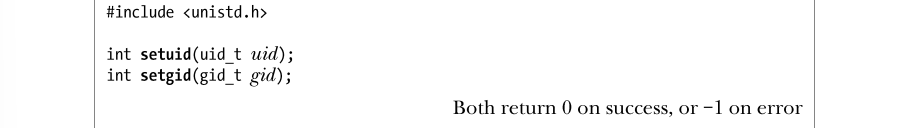
进程使用 setuid()和 setgid()系统调用能对其凭证做哪些修改呢？其规则取决于进程是否拥有特权（即有效用户 ID 为 0）。适用于 setuid()系统调用的规则如下。
1． 当非特权进程调用 setuid()时，仅能修改进程的有效用户 ID。而且，仅能将有效用户 ID修改成相应的实际用户 ID 或保存 set-user-ID。（企图违反此约束将引发 EPERM 错误。）这意味着，对于非特权用户而言，仅当执行 set-user-ID 程序时，setuid()系统调用才起作用，因为在执行普通程序时，进程的实际用户 ID、有效用户 ID 和保存 set-user-ID 三者之值均相等。在一些派生自 BSD 的实现中，非特权进程对 setuid() 或 setgid()的调用，其语义有别于与其他 UNIX 实现：系统调用会修改实际、有效和保存设置 ID（将其改为当前的实际或有效 ID 值）。
2． 当特权进程以一个非 0 参数调用 setuid()时，其实际用户 ID、有效用户 ID 和保存 set-user-ID均被置为 uid 参数所指定的值。这一操作是单向的，一旦特权进程以此方式修改了其 ID，那么所有特权都将丢失，且之后也不能再使用 setuid()调用将有效用户 ID 重置为 0。如果不希望发生这种情况，请使用稍后介绍的 seteuid()或者 setreuid()系统调用来替代 setuid()。使用 setgid()系统调用修改组 ID 的规则与之相类似，仅需要把 setuid()替换为 setgid()，把用户替换为组。因之，规则 1 与前述完全一致，但在规则 2 中，由于对组 ID 的修改不会引起进程特权的丢失（拥有特权与否由有效用户 ID 决定），特权级程序可以使用 setgid()对组 ID进行任意修改。对 set-user-ID-root 程序（即其有效用户 ID 的当前值为 0）而言，以不可逆方式放弃进程所有特权的首选方法是使用下面的系统调用（以实际用户 ID 值来设置有效用户 ID 和保存set-user-ID）。
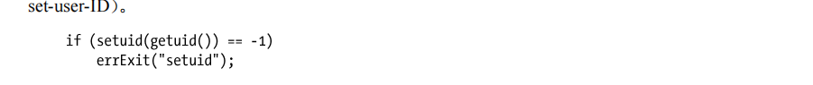
set-user-ID 程序的属主如果不是 root 用户，可使用 setuid()将有效用户 ID 在实际用户 ID和保存 set-user-ID 之间来回切换，其理由已在 9.4 节中予以阐述。然而，使用 seteuid()来达成这个目的则更为可取，因为无论 set-user-ID 程序是否属于 root 用户，seteuid()都能够实现同样的功能。进程能够使用 seteuid()来修改其有效用户 ID（改为参数 euid 所指定的值），还能使用setegid()来修改其有效组 ID（改为参数 egid 所指定的值）。进程使用 seteuid()和 setegid()来修改其有效 ID 时，会遵循以下规则。
1． 非特权级进程仅能将其有效 ID 修改为相应的实际 ID 或者保存设置 ID。（换言之，对非特权级进程而言，除去前面讨论的BSD可移植性问题，seteuid()和setegid()分别等效于setuid()和 setgid()。）
2． 特权级进程能够将其有效 ID 修改为任意值。若特权进程使用 seteuid()将其有效用户 ID 修改为非 0 值，那么此进程将不再具有特权（但可以根据规则 1 来恢复特权）。对于需要对特权“收放自如”的 set-user-ID 和 set-group-ID 程序，更推荐使用 seteuid()，
示例如下：
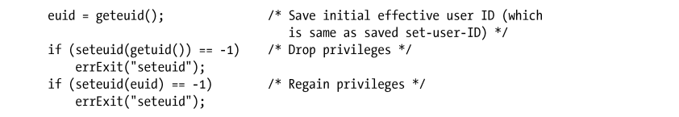
源于 BSD 系统的 seteuid() 和 setegid()，现已纳入 SUSv3 规范，并获得大多数 UNIX 系统实现的支持。
在 GNU C 语言函数库的早期版本中（glibc 2.0 及其之前的版本），将 seteuid(euid)实现为 setreuid(–1, euid)。而在新版的 glibc 库中，则将 seteuid(euid)实现为 setresuid(–1，euid，−1)。（稍后将给出对 setreuid()、setresuid()及其类似函数的描述。）这两种实现都允许将 euid参数值指定为当前有效用户 ID（即保持不变）。然而，SUSv3 并未对 seteuid()的这个行为进行规范，并且其他一些 UNIX 实现对此也不支持。总的来说，这种潜在的差异在系统实现间并不明显，因为在通常情况下，有效用户 ID 要么与实际用户 ID 相同，要么与保存set-user-ID 相同。（要想使有效用户 ID 与二者均不相同，在 Linux 系统中唯一的办法是采用非标准的 setresuid()系统调用。）在 glibc 库的所有版本（包括最新版本）中，是以 setregid(–1，egid)来实现 setegid(egid)的。如同 seteuid()一样，这意味着能够将参数 egid 指定为当前有效组 ID，尽管 SUSv3 并未规范这一行为。还有一层含义是使用 setegid()时，如果对有效组 ID 值的设置不同于当前的实际组 ID，那么还将改变保存 set-group-ID。（类似结论也适用于早期使用 setreuid()来实现的 seteuid()。）同样，SUSv3 也不支持这一行为。修改实际 ID 和有效 ID
setreuid()系统调用允许调用进程独立修改其实际和有效用户 ID。setregid()系统调用对实际和有效组 ID 实现了类似功能。
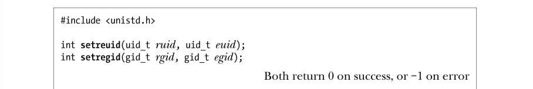
这两个系统调用的第一个参数都是新的实际 ID，第二个参数都是新的有效 ID。若只想修改其中的一个 ID，可以将另外一个参数指定为−1。目前，最初派生自 BSD 的 setreuid()和 setregid()为 SUSv3 规范所接纳，并且获得了大多数 UNIX 系统的支持。同本节介绍的其他系统调用一样，使用 setreuid()和 setregid()来作出变更也要遵循一定的规则。下面将从 setreuid()的视角来描述这些规则，除非另有说明，setregid()函数的规则也与之类似。
1． 非特权进程只能将其实际用户 ID 设置为当前实际用户 ID 值（即保持不变）或有效用户ID 值，且只能将有效用户 ID 设置为当前实际用户 ID、有效用户 ID（即无变化）或保存set-user-ID。SUSv3 声称，对于非特权进程是否能使用 setreuid()将其实际用户 ID 修改为实际用户ID、有效用户 ID 或者保存 set-user-ID 的当前值，规范不做规定。至于真正能将实际用户 ID修改成何值，这随 UNIX 实现的不同而不同。SUSv3 对 setregid()的规定稍有不同，非特权进程能够将其实际组 ID 设置为保存set-group-ID 的当前值，或者将其有效组 ID 设置为实际组 ID 或保存 set-group-ID 的当前值。但真正能对实际组 ID 做哪些修取决于具体的 UNIX 实现。
2． 特权级进程能够设置其实际用户 ID 和有效用户 ID 为任意值。
3． 不管进程拥有特权与否，只要如下条件之一成立，就能将保存 set-user-ID 设置成（新的）有效用户 ID。
a） ruid 不为-1（即设置实际用户 ID，即便是置为当前值）。
b）对有效用户 ID 所设置的值不同于系统调用之前的实际用户 ID。反过来说，如果进程使用 setreuid()仅将有效用户 ID 修改为实际用户 ID 的当前值，那么保存 set-user-ID 的值将保持不变，并且后续可调用 setreuid()（或 seteuid()）将有效用户 ID恢复为保存 set-user-ID 的值。（setreuid()和 setregid()针对保存设置 ID 的这一效果，SUSv3未做规定，但已被 SUSv4 纳入规范。）规则 3 为 set-user-ID 程序提供了一个永久放弃特权的方法，使用如下调用：
set-user-ID-root 进程若有意将用户凭证和组凭证改变为任意值，则应首先调用 setregid()，然后再调用 setreuid()。一旦调用顺序颠倒，那么调用 setregid()将会失败，因为调用 setreuid()后，程序将不再具有特权。若使用 setresuid()和 setresgid()（详见下述）来实现此功能，上述描述也同样适用。直至 4.3BSD，BSD 发行版都不支持保存 set-user-ID 和保存 set-group-ID（如今已为SUSv3 强制要求支持）。相反，在 BSD 中，setreuid()和 setregid()允许进程通过来回交换实际 ID 和有效 ID 来“收、放”特权。这一方式的不良副作用在于为了改变有效用户 ID 而改变实际用户 ID。
获取实际、有效和保存设置 ID
在大多数 UNIX 实现中，进程不能直接获取（或修改）其保存 set-user-ID 和保存set-group-ID 的值。然而，Linux 提供了两个（非标准的）系统调用来实现此项功能：getresuid() 和 getresgid()。getresuid()系统调用将调用进程的当前实际用户 ID、有效用户 ID 和保存 set-user-ID 值返回至给定 3 个参数所指定的位置。getresgid()系统调用针对相应的组 ID 实现了类似功能。修改实际、有效和保存设置 ID setresuid()系统调用允许调用进程独立修改其 3 个用户 ID 的值。每个用户 ID 的新值由系统调用的 3 个参数给定。setresgid()系统调用对相应的组 ID 实现了类似功能。若不想同时修改这些 ID，则需将无意修改的 ID 参数值指定为-1。例如，下列调用等同于seteuid(x)调用：关于 setresuid()可做何种修改的规则（setresgid()与之类似）如下所示。
1． 非特权进程能够将实际用户 ID、有效用户 ID 和保存 set-user-ID 中的任一 ID 设置为实际用户 ID、有效用户 ID 或保存 set-user-ID 之中的任一当前值。
2． 特权级进程能够对其实际用户 ID、有效用户 ID 和保存 set-user-ID 做任意设置。
3． 不管系统调用是否对其他 ID 做了任何改动，总是将文件系统用户 ID 设置为与有效用户ID（可能是新值）相同。
setresuid()和 setresgid()调用具有 0/1 效应，即对 ID 的修改请求要么全都成功，要么全部失败。（这也适用于本章所述其他修改多个 ID 的系统调用。）
虽然 setresuid()和 setresgid()为修改进程凭证提供了最为直接的 API，但在应用程序中采用这些调用会带来可移植性问题。SUSv3 规范并未包括这些调用，且其他 UNIX 实现对其也鲜有支持。
9.7.2 获取和修改文件系统 ID
前述所有修改进程有效用户 ID 或组 ID 的系统调用总是会修改相应的文件系统 ID。要想独立于有效 ID 而修改文件系统 ID，必须使用 Linux 特有的系统调用：setfsuid() 和 setfsgid()。
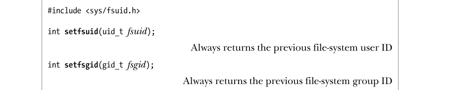
setfsuid()系统调用将进程文件系统用户 ID 修改为参数 fsuid 所指定的值。setfsgid()系统调用将文件系统组 ID 修改为参数 fsgid 所指定的值。同样，此类变更也存在一些规则。setfsgid()的规则类似于 setfsuid()，下面以 setfsuid()为例。1． 非特权进程能够将文件系统用户 ID 设置为实际用户 ID、有效用户 ID、文件系统用户 ID（即保持不变）或保存 set-user-ID 的当前值。2． 特权级进程能够将文件系统用户 ID 设置为任意值。这些系统调用的实现存在一些瑕疵。首先，没有相应的系统调用来获取当前的文件系统ID。另外，这些系统调用根本不做错误检查。一旦非特权进程试图将文件系统 ID 设置为一个非法值，这一不轨企图也只是被静默地忽略掉。无论这些调用成功与否，其返回值都是之前相关文件系统的 ID。因此，这确实也是一种获得当前文件系统 ID 的方法，但却只能是在尝试修改这些值（不管是否成功）的同时进行。在 Linux 系统中，使用 setfsuid()和 setfsgid()系统调用已不是必要的，若需要将应用程序移植到其他 UNIX 实现上，则应在设计时避免使用这两个调用。
9.7.3 获取和修改辅助组 ID
getgroups()系统调用会将当前进程所属组的集合返回至由参数 grouplist 指向的数组中。
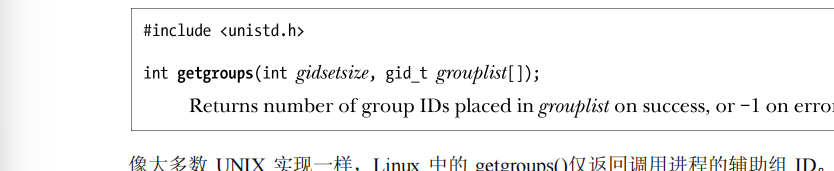
像大多数 UNIX 实现一样，Linux 中的 getgroups()仅返回调用进程的辅助组 ID。然而，SUSv3 规范还允许 UNIX 实现在返回的 grouplist 中包含调用进程的有效组 ID。调用程序必须负责为 grouplist 数组分配存储空间，并在 gidsetsize 参数中指定其长度。若调用成功，getgroups()会返回置于 grouplist 中的组 ID 数量。若进程属组的数量超出 gidsetsize，则 getgroups()将返回错误(错误号为 EINVAL)。为了避免发生这种情况，可将 grouplist 数组的大小调整为常量 NGROUPS_MAX+1（考虑到可移植性，数组中可能包含了有效组 ID），该常量（定义于
在 Linux 内核版本 2.6.4 之前，NGROUPS_MAX 的值为 32。始于内核版本 2.6.4，NGROUPS_MAX 的值为 65536。应用程序要在运行时获取 NGROUPS_MAX 的上限，还可使用如下方法。
- 调用 sysconf(_SC_NGROUPS_MAX)。（11.2 节解释了 sysconf()的用法。）
- 从 Linux 特有的/proc/sys/kernel/ngroups_max 只读文件中读取该限制。系统从内核 2.6.4开始提供该文件。
除此之外，应用程序还能在调用 getgroups()时将 gidtsetsize 参数指定为 0。这样一来，grouplist 数组未作修改，但调用的返回值却给出了进程属组的数量。通过上述任意一种运行时技术所获取的 NGROUPS_MAX 值，可用于为后续的 getgroups()调用动态分配 grouplist 数组。特权级进程能够使用 setgroups()和 initgroups()来修改其辅助组 ID 集合。
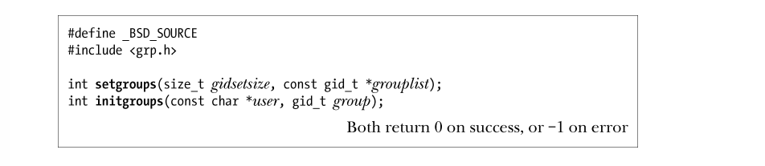
setgroups()系统调用用 grouplist 数组所指定的集合来替换调用进程的辅助组 ID。参数gidsetsize 指定了置于参数 grouplist 数组中的组 ID 数量。initgroups()函数将扫描/etc/groups 文件，为 user 创建属组列表，以此来初始化调用进程的辅助组 ID。另外，也会将参数 group 指定的组 ID 追加到进程辅助组 ID 的集合中。initgroups()函数的主要用户是创建登录会话的程序—例如 login(1)，在用户调用登录shell 之前，为进程设置各种属性。此类程序一般通过读取密码文件中用户记录的组属性来获取参数 group 的值。这稍微有点令人费解，因为密码文件中的组 ID 实际并非辅助组 ID，而是定义了登录 shell 初始的实际组 ID、有效组 ID 和保存 set-group-ID。尽管如此，这却是 initgroups()函数的常用使用方式。虽然未纳入 SUSv3，setgroups()和 initgroups()却获得了所有 UNIX 实现的支持。9.7.4 修改进程凭证的系统调用总结表 9-1 对修改进程凭证的各种系统调用及库函数的效果进行了总结。图 9-1 提供了表 9-1 中信息的概括图示。本图内容是从修改用户 ID 的角度加以展示的，但修改组 ID 的规则与之类似。
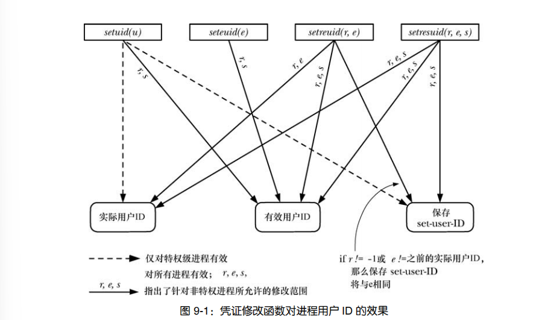
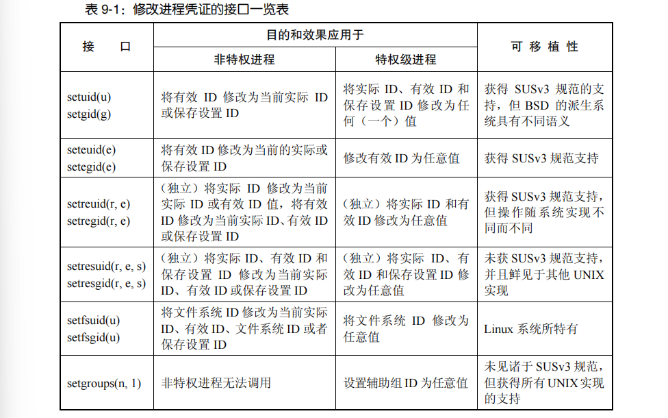
- glibc 库对 seteuid()(setresuid(–1，e，–1))和 setegid()(setregid (–1，e，–1))函数的实现方式允许将有效 ID 设置为有效 ID 的当前值，但 SUSv3 对此未作规范。此外，若将有效组 ID 设置为当前实际组 ID 之外的值，那么 setegid()的函数实现还会修改保存设置组 ID。（对于setegid()实现这一修改保存 set-group-ID 的行为，SUSv3 也未作规范。）
- 针对特权级进程和非特权进程调用 setreuid()和 setregid()的情况，若 r 的值不等于−1，或者 e 的值有别于函数调用前的实际 ID，则将保存 set-user-ID 或保存 set-group-ID 设置为（新的）有效 ID。（setreuid()和 setregid()函数对保存设置 ID 的修改未获 SUSv3 支持。）
- 只要修改了有效用户（组）ID，就会将 Linux 特有的文件系统用户（组）ID 也修改为相同值。
- 不管有效用户 ID 是否改变，setresuid()系统调用总是把文件系统用户 ID 修改为有效用户 ID， setresgid()系统调用对文件系统组 ID 的效力与之类似。
9.7.5 示例：显示进程凭证
程序清单 9-1 中的程序使用前述系统调用和库函数来获取进程的所有用户 ID 和组 ID，并显示出来。
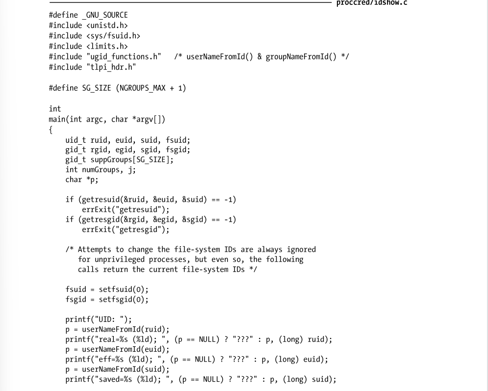
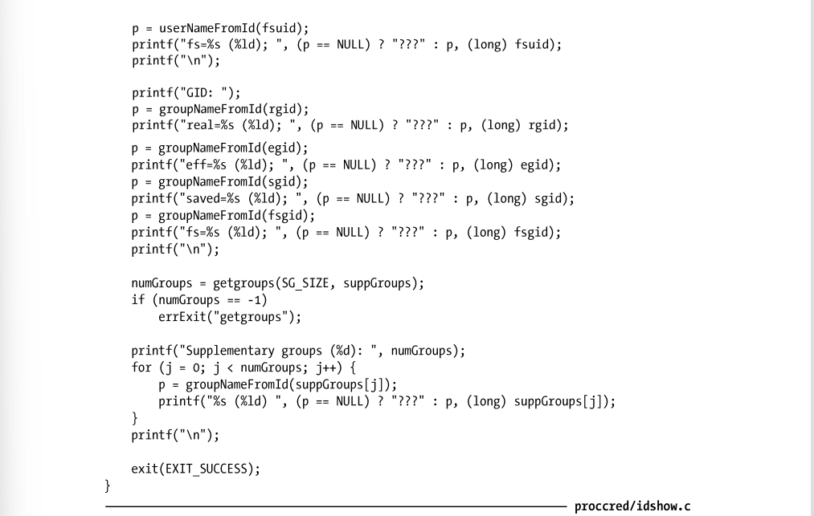
9.8 总结
每个进程都有一干与之相关的用户 ID 和组 ID（凭证）。实际 ID 定义了进程所属1。在大多数的 UNIX 实现中，进程对诸如文件之类资源的访问，其许可权限由有效 ID 决定。然而，Linux 会使用文件系统 ID 来决定对文件的访问权限，而将有效 ID 用于检查其他权限。（因为文件系统 ID 一般等同于相应的有效 ID，所以 Linux 对文件权限的检查方式与其他 UNIX 实现相同。）进程辅助组 ID 则是出于权限检查目的而另行设立的进程属组集合。存在各种系统调用和库函数支持进程获取和修改其用户 ID 和组 ID。set-user-ID 程序运行时，会将进程有效用户 ID 置为文件属主的用户 ID。运行某个特殊程序时，这种机制支持用户“假借”其他用户的身份和特权。相应的，set-group-ID 程序会修改运行该程序的进程的有效组 ID。保存 set-user-ID 和保存 set-group-ID 允许 set-user-ID 和set-group-ID 程序临时性地放弃特权，并在之后恢复特权。0 在用户 ID 中可谓卓尔不群。通常仅为一个名为 root 的账号所有。有效用户 ID 为 0 的进程属特权级进程。换言之，对于进程发起的各种系统调用，可免于接受通常所要历经的诸多权限检查（比如那些能够随意修改进程各种用户 ID 和组 ID 的调用）。